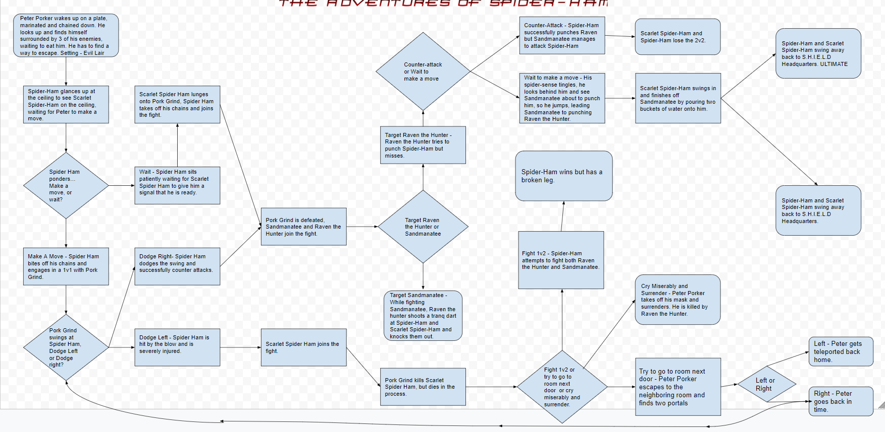

Dungeon Dodge is a game where you, the player, are contained within a dungeon, and fireballs are constantly being "hurled" at you. You must dodge the fireballs for as long as possible, If the amount of lives you have is reduced to zero, you lose. While developing this game, my partner added a scoring system that gives you a point for every second that you manage to stay alive. We used a random number generator to randomize the spawn areas of the fireballs. The game's difficulty changes depending on the mode that you select: easy, medium, and hard (easiest to hardest). The game ends when you run out of lives, you lose one life everytime you hit a fireball.
The inspiration behind this game was "The Binding of Isaac" franchise. The idea of the game was really simple but could also be fun so we decided to create something somewhat similar. Two successsful points in the development process are the user interface, which was very user friendly and has a clean design, and the coding for the movement of sprites, which was the simplest part of the project. While creating the game we had problems with the timer and code of the tutorial. We solved these problems by just slowly trying different things until it worked the way that we wanted to. If we had more time and resources for this project, I would want to improve the lives system, as there were a few bugs with that, and I would want to make the game more graphically pleasing, as it is kind of plain.

This algorithm is very significant to the game. It is an algorithm since it is a set of "rules" that the computer will follow and then output anything necessary. This algorithm makes it so that if certain keys are pressed, the sprite will move in a certain direction.

This "more blocks" was used to make it so that the sprite will change costumes depending on the direction it is moving on and the key that is pressed. This "more blocks" is activated whenever it receives a certain broadcast.
The Adventures of Spider-Ham is about Peter Porker, a spider man from an alternate universe. Peter Porker wakes up in the secret lair of his enemies, and with the help of Scarlet Spider-Ham, he must find a way to either escape, or defeat his enemies.
While developing this game, Simon and I started off by writing the story line and then coding the story as we went on. At first, we had a bit of trouble with the length of the story, as sometimes the screen would fill and the code would stop working, however after a while we realized that we should shorten the story as repl.it seemed to be working very hard to output the text, and it would make it so that the player did not have to clear the text every so often. I independently worked on the input and output system, and at one point I discovered a flaw in out input system, in which I made it so that the input system would not accept certain strings such as "12". This made it so that the game did not stop suddenly.
Organizing scenes into functions is a form of procedural abstraction as it allows the code to work without the user knowing how it works. It can flow easily and it seperates code into smaller pieces. Advantages to abstraction are that it makes it so that mistakes in code only need to be fixed in one place, and that it is easier to test certain chunks of the code.
One story that I read was "The Lovers' Quarrel, and I enjoyed it as it was very humorous, and another story that I read was "Unrealistic Dating Simulator" and I enjoy it as it had a very intricate storyline.